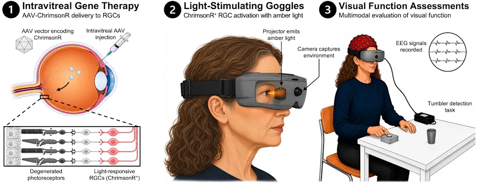
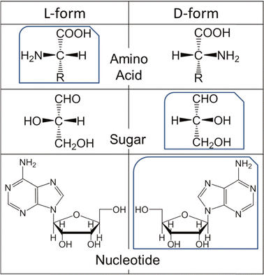
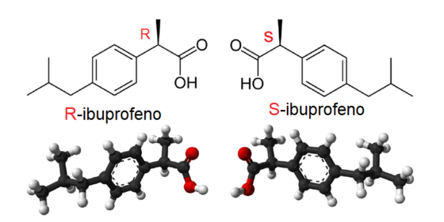

Alfred Nobel va ser el inventor de la dinamita i altres explosius, i amb això va fer fortuna. Però a causa del seu descobriment va esdevenir la mort massiva de gent, Alfred Nobel arrepentit, va decidir dedicar tot el seu patrimoni a premiar tots els anys a aquelles persones que contribuissin a la societat amb descobriments en àmbits com la medicina, física, química...
KARL DEISSEROTH, PETER HEGEMANN i GEORG NAGEL van descobrir una proteïna, la Canalrodopsina en unes algues que podien reaccionar a la llum. Aixo va crear un nou camp de coneixement: la Optogenètica, que permet introduir aquesta proteïna senssible a la llum dins de cèl·lule com les neurones i controlar-les amb llum. Aplicant llum a certes regions del cervell, podem activar o desactivar zones del cervell i per tant veure les seves funcions.
Relacionat amb el Nobel de medicina es va publicar el 8 d'octubre a la revista New England Journal of Medicine un article on persones cegues van recuperar parcialment la visió. L'article es titula Optogenetic Therapy for Restoring Aspects of Visual Function
A l'article anterior a deu pacients cecs s'els injecta un virus que conté un tros d'ADN anomenat chrimsonR que produeix una canalrodopsina modificada dins les cèl·lules ganglionars de la retina. Això vol dir que les persones cegues que no tenen que notenen les c`l·lules cons (sensibles al color) ni les cèl·lules bastons (sensibles a la llum) ara tenen unes cèl·lules sensibles a la llum que reaccionen a la llum a 590 nm. Els pacients necessiten per veure unes ulleres de llum àmbar que transformaran tota la llum que rep en una longitud d'ona de 590 nm.

Henri B. Kagan i Kenso Soai van idear mètodes de síntesi química capaços de fabricar mol·lècules quirals pures i no barrejes de mol·lècuels. De fet els neutrins són mol:lèciles subatòmiques quirals d'esquerres, mentre que els antineutrins són de dretes. La matèria tindria una tendencia a la quiralitat. El meteorit Murchinson conté més aminoàcids de tipus L (o levogirs) que giren la llum a l'esquerra, aminoàcids D (o dextrogirs) que giren la llum a la dreta. Al planeta Terra quasi tots els aminoàcids de les proteïnes són L. En canvi, els carbohidrats, estàn composats per sucre que són de tipus D.

A continuació podem veure un exemple d'un fàrmac quiral: l'ibuprofè. L'activitat farmacològica d'S-ibuprofè és major que la de l'R-ibuprofè.

Això va ser descobert per Orlando i col·laboradors al 2015. Va descobrir que el S-ibuprofè s'unia a la ciclooxigenasa tipus 2 que fabrica productes proinflamatoris com les prostraglandinas. I en canvi el R-ibuprofè no s'uneix a la ciclooxigenasa tipus 2 i no inhibeix o impedeix la fabricació de productes proinflamatoris. L'àcid acetilsalicílic, que és el principi actiu de l'aspirina, també funciona gràcies a la inhibició de la ciclooxigenasa tipus 2 (COX-2), descovert per John Vane al 1971 (premi Nobel medicina 1982).
Pots veure una animació interactiva d'S-ibuprofè unit a COX2 en aquest enllaç del Protein Data Bank 4PH9.
La referencia bibliogràfica d'Orlando de 2015 és:
Orlando, B.J., Lucido, M.J., Malkowski, M.G.(2015) The structure of Ibuprofen bound to cyclooxygenase-2. J Struct Biol 189: 62-66
Francis Halzenva rebre el premi Nobel de Física per construir el IceCube que és una laboratori situat al pol sud i que és capaç de detectar partícules "fantasma" que travesen la matèria, com els neutrins